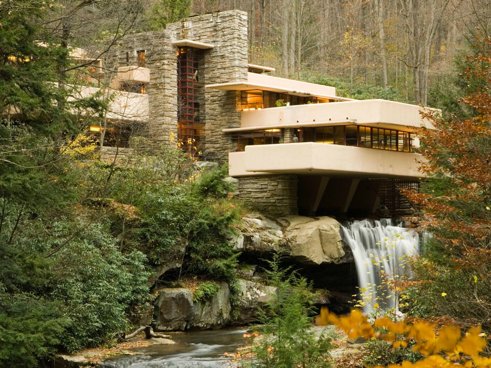
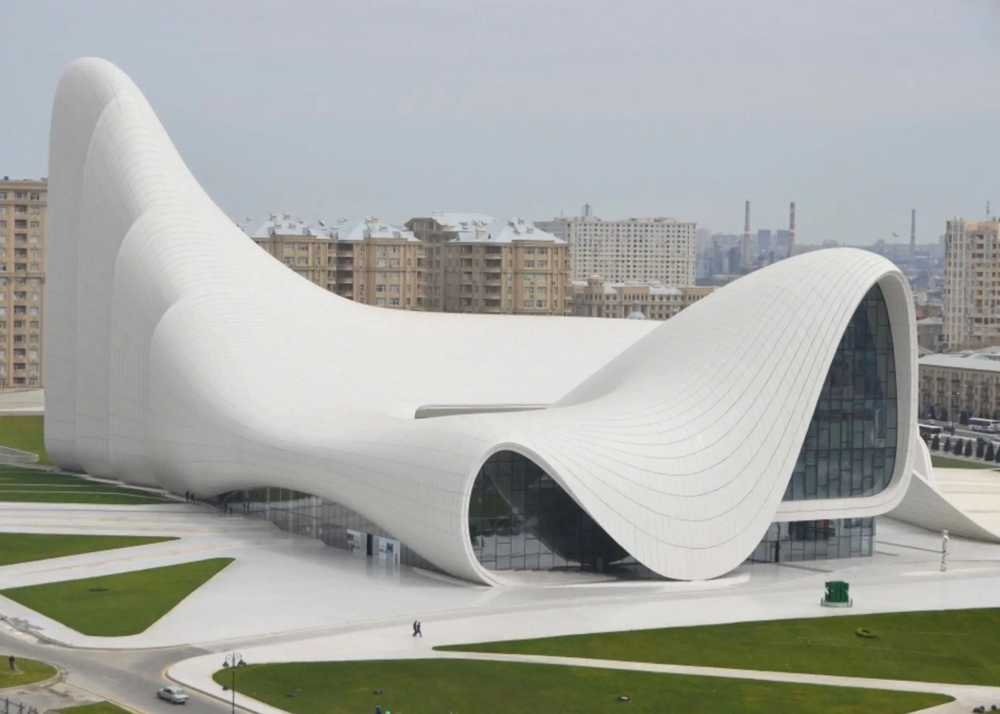
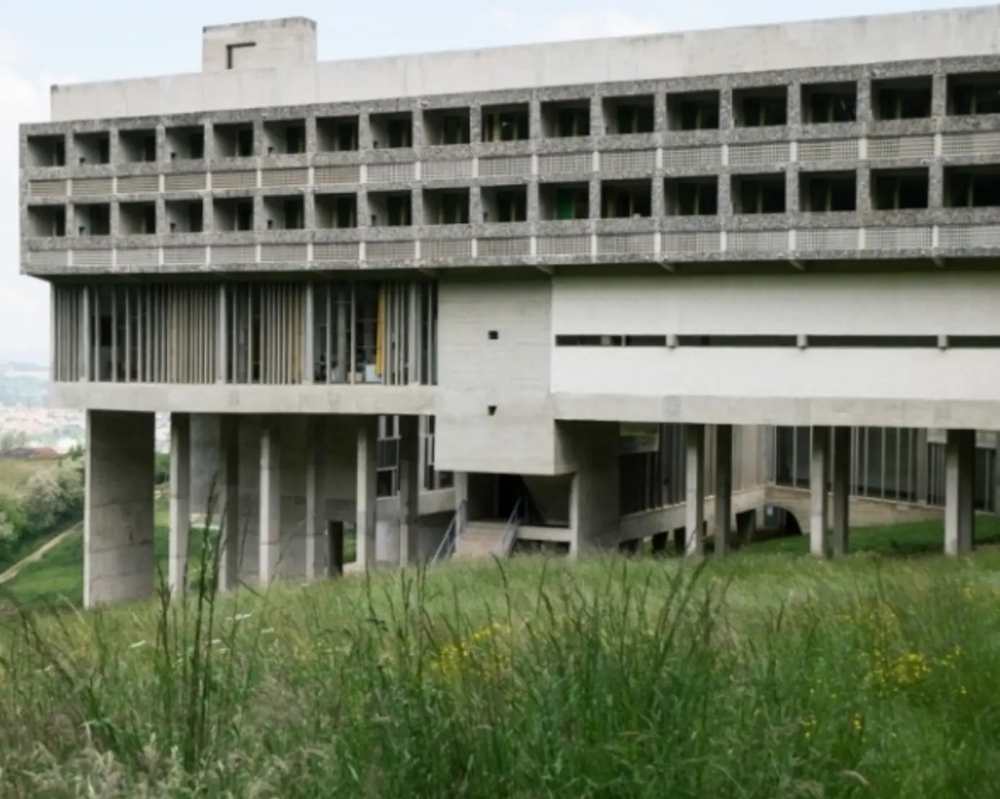
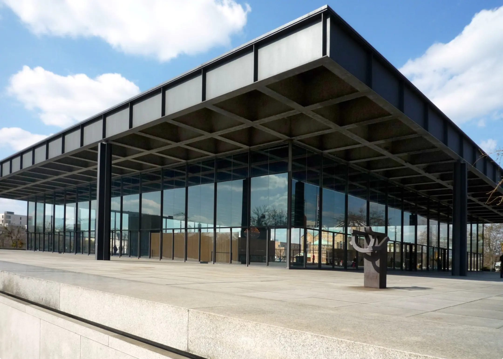
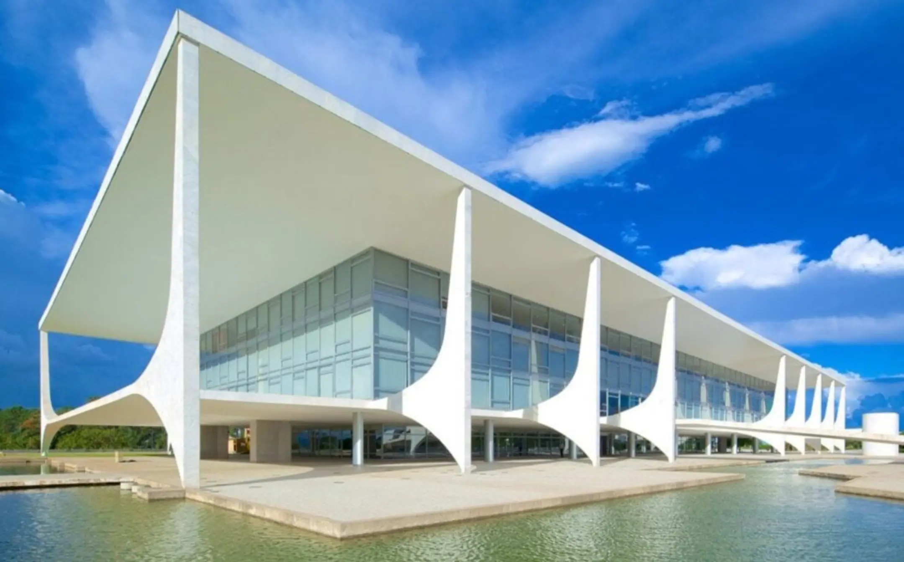
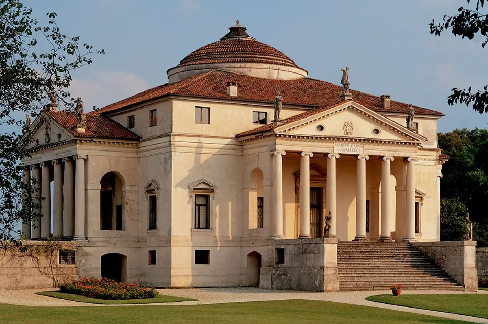
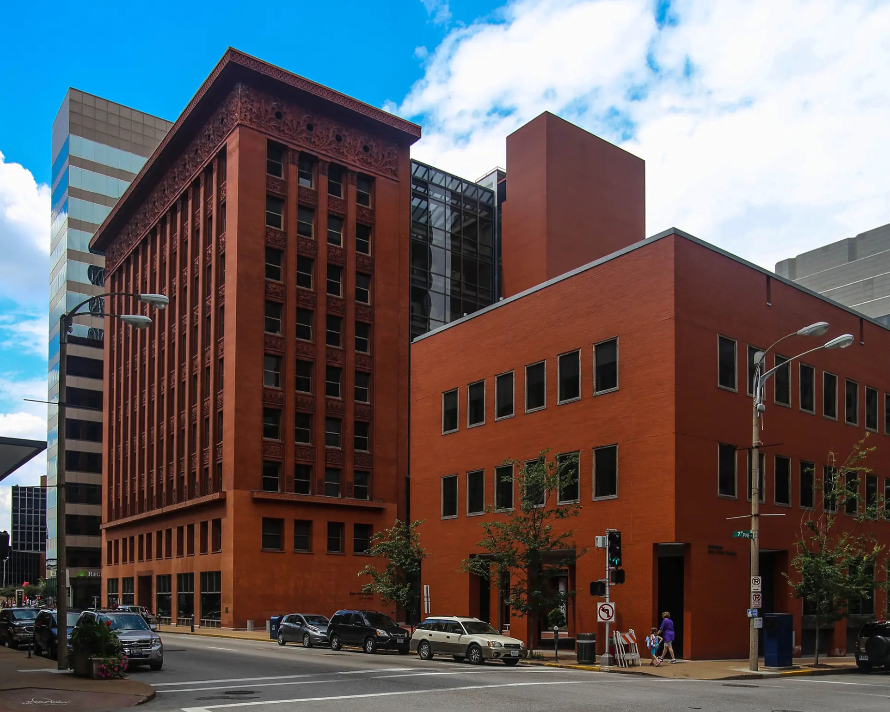
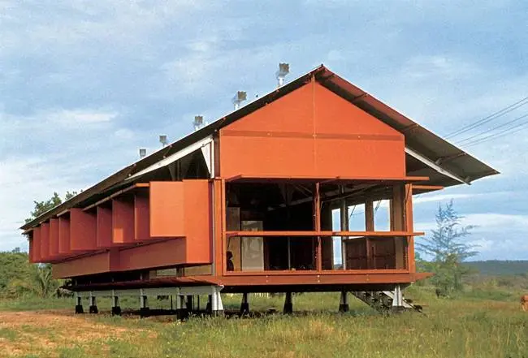
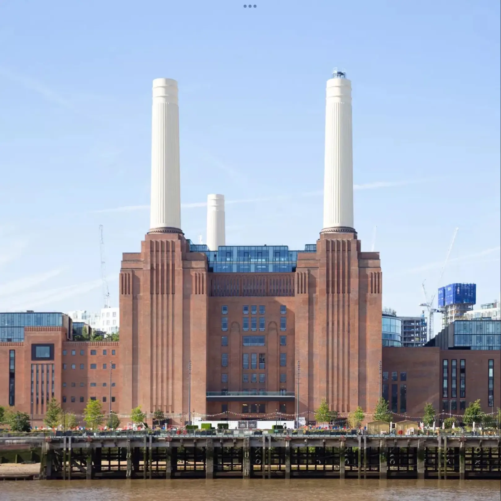

Відомі архітектори світу
Архітектура формує наш світ, поєднуючи мистецтво та інженерію. Дізнайтеся про видатних архітекторів, які залишили незабутній слід у історії.
Антоніо Ґауді
Дата народження: 25 червня 1852, Реус або Ріудомс, Каталонія, Іспанія.
Освіта: Вища архітектурна школа Барселони.
Антоніо Ґауді був іспанським архітектором, відомим своїм унікальним стилем, що поєднує готику та органічні форми природи. Його найвідоміший проект — храм Саграда Фамілія в Барселоні.
Френк Ллойд Райт
Дата народження: 8 червня 1867, Річленд-Сентер, Вісконсин, США.
Освіта: Університет Вісконсин–Медісон (не завершив).
Френк Ллойд Райт був американським архітектором, який розробив концепцію органічної архітектури. Його шедевр — Будинок над водоспадом (Fallingwater).
Заха Хадід
Дата народження: 31 жовтня 1950, Багдад, Ірак.
Освіта: Американський університет у Бейруті; Архітектурна асоціація в Лондоні.
Заха Хадід була британською архітекторкою іракського походження, першою жінкою, яка отримала Прітцкерівську премію. Її стиль вирізняється динамічними формами та футуристичним підходом.
Ле Корбюзьє
Дата народження: 6 жовтня 1887, Ла-Шо-де-Фон, Швейцарія.
Освіта: Місцева школа мистецтв у Ла-Шо-де-Фоні.
Ле Корбюзьє був французьким архітектором швейцарського походження, одним із піонерів сучасної архітектури. Його підхід базувався на функціональності та мінімалізмі.
Людвіг Міс ван дер Рое
Дата народження: 27 березня 1886, Аахен, Німеччина.
Освіта: Самоосвіта; працював у майстернях архітекторів.
Людвіг Міс ван дер Рое був німецько-американським архітектором, відомим своїм мінімалістичним підходом та висловом "менше — це більше".
Оскар Німеєр
Дата народження: 15 грудня 1907, Ріо-де-Жанейро, Бразилія.
Освіта: Національна школа витончених мистецтв у Ріо-де-Жанейро.
Оскар Німеєр був бразильським архітектором, відомим своїми скульптурними, експресивними дизайнами, які сформували національну ідентичність Бразилії.
Андреа Палладіо
Дата народження: 30 листопада 1508, Падуя, Італія.
Освіта: Навчався у місцевих майстрів; вплив римської архітектури.
Андреа Палладіо був італійським архітектором епохи Відродження, який популяризував класичні елементи архітектури Стародавнього Риму.
Луїс Салліван
Дата народження: 3 вересня 1856, Бостон, США.
Освіта: Массачусетський технологічний інститут (MIT).
Салліван був відомий як "батько хмарочоса". Він був наставником Френка Ллойда Райта та зробив вагомий внесок у формування архітектури США на межі XIX–XX ст.
Гленн Меркатт
Дата народження: 25 липня 1936, Лондон, Велика Британія.
Освіта: Технічний університет Нового Південного Уельсу, Сідней.
Меркатт — австралійський архітектор, який отримав Прітцкерівську премію. Його стиль — це поєднання мінімалізму та екологічного підходу до дизайну.
Рафаель Віньолі
Дата народження: 1 листопада 1944, Монтевідео, Уругвай.
Освіта: Університет Буенос-Айреса; Університет Прінстона (аспірантура).
Аргентинсько-американський архітектор, автор численних міжнародних проектів, включно з найвищими хмарочосами Нью-Йорка. Його стиль — монументальний і сучасний.
